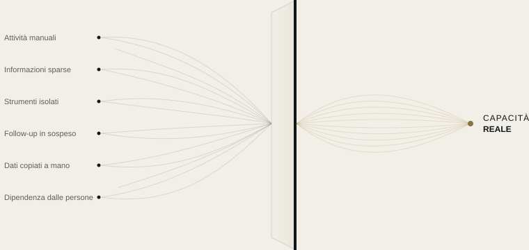

Automazione
Trasformiamo le attività ripetitive in processi automatici, con regole che definiamo insieme a te.
AUTOMAZIONE DELLE RISORSE
Alla maggior parte delle aziende non servono altri strumenti. Serve sapere dove si disperdono tempo, informazioni e attenzione.
SKURX SYSTEMS individua dove si perde capacità e la trasforma in modi di lavorare più chiari, connessi ed efficienti.
COSA FACCIAMO
Individuiamo dove la tua azienda perde capacità e la liberiamo con automazione, strumenti connessi e intelligenza artificiale applicata dove ha senso.

I NOSTRI SERVIZI
Trasformiamo le attività ripetitive in processi automatici, con regole che definiamo insieme a te.
Per ciò che una regola non risolve: l’IA potenzia il tuo team, non lo sostituisce.
Colleghiamo i tuoi strumenti perché le informazioni passino dall’uno all’altro senza che nessuno debba intervenire.
COME LAVORIAMO
Non partiamo da una tecnologia, ma da una domanda: dove sta perdendo capacità la tua azienda, e perché?
Conosciamo la tua azienda dall’interno, osservando come lavora il tuo team ogni giorno.
Individuiamo dove si perdono tempo, informazioni o potenziali clienti, e perché.
Ti diciamo cosa cambieremmo e cosa non vale la pena toccare.
Lo mettiamo in funzione, lo testiamo con te e lo regoliamo finché non funziona come serve al tuo team.
IL PRIMO PASSO
In una settimana analizziamo come lavora la tua azienda e ti consegniamo una mappa chiara: cosa consuma capacità, cosa si può automatizzare e in quale ordine. Il report è tuo, qualunque cosa tu decida.
Ogni flusso spiegato in un linguaggio chiaro.
Account, strumenti e dati sono tuoi.
Puoi vedere cosa ha fatto ogni automazione e quando.
Se smettiamo di lavorare insieme, tutto resta tuo.
ESEMPI PER SETTORE
Scenari illustrativi basati su situazioni comuni. Lavoriamo con aziende di qualsiasi settore, in tutta la Spagna.
Tutto continua a funzionare, anche quando in ufficio non c’è più nessuno.